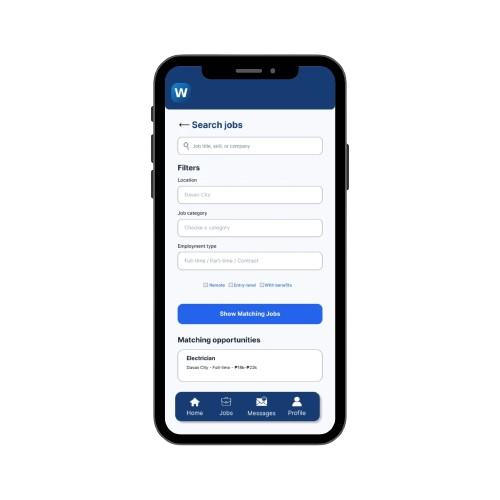
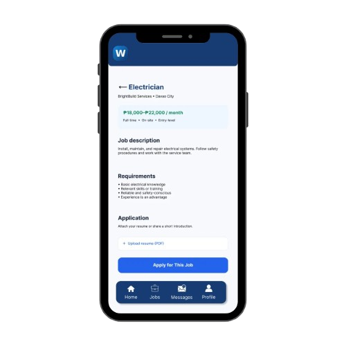
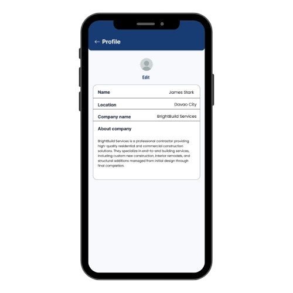
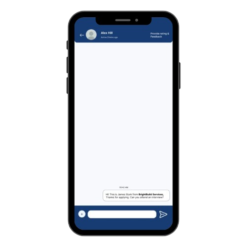

WHAT WE OFFER
Our Services
WorkLink provides job-searching and recruitment services for job seekers and employers.
For Job Seekers
Find opportunities and manage your job applications with ease.

Job Search
Browse available job opportunities based on location, category, salary, and employment type. Find jobs that match your skills, qualifications, and interests.

Worker Profile
Create and manage your personal profile containing your skills, education, qualifications, and work experience. Help employers learn more about your professional background.

Online Job Application
Apply directly to available job postings and submit your applications online. Review job descriptions and requirements before applying for opportunities.
Application Tracking
Monitor the progress of your submitted job applications. Check your application status, from submission and review to the hiring process.

Direct Messaging
Communicate directly with employers about job applications, interview schedules, and employment opportunities. Make communication easier and more convenient.
For Employers
Find qualified workers and simplify your recruitment process with WorkLink.

Employer Profile
Create a company or employer profile to introduce your business and establish your presence on WorkLink. Provide company information, location, and business details to help job seekers learn more about your organization.

Job Posting
Publish job openings with descriptions, qualifications, salary information, and employment types. Make your available positions visible to job seekers searching for new opportunities.

Applicant Management
View and manage individuals who apply for your job openings in one convenient platform. Review applicant information, experience, and qualifications to organize the recruitment process.

Applicant Shortlisting
Identify and select potential workers based on their skills, experience, and qualifications. Review applicant profiles and update their application status throughout the hiring process.

Direct Messaging
Communicate directly with applicants regarding job applications, interview schedules, and hiring opportunities. Make communication with potential employees easier and more convenient.